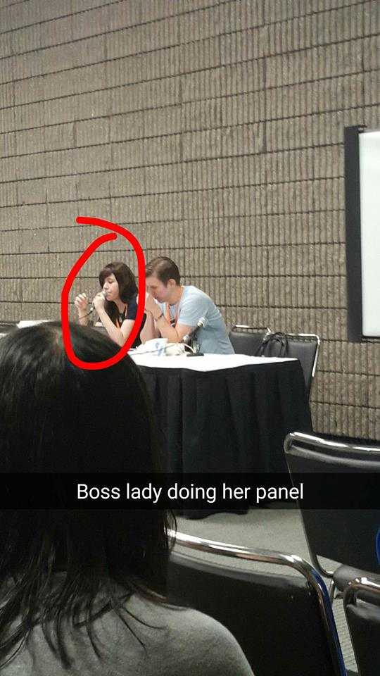

My interest in public speaking stems from my interest in research. The best presentations I've ever given have been the ones where I come away learning something as well. It's about speaking but it's also about knowing enough about a subject to be able to explain it to others.
Click here to jump to a section:
Lectures: Research Methods
As part of my teaching assistantship in Fall 2017 at Georgia Tech, I had the privilege of lecturing on four topics to first year MS-HCI students:- • Study Design
- • Qualitative Data Analysis
- • Data Representation + Storytelling
- • Dark Patterns and the Ethics of UX
Presentation: PURC 2015
I presented a representation of the research done in 2014-2015 regarding self-control in Capuchin monkeys at with the COMIC Lab at Georgia State's Psychology Undergraduate Research Conference in 2015.Whether you're studying adults, children, or capuchin monkeys, everyone performs cognitive tasks at different performance levels. Self control is something that many people struggle with that dictates a lot of things like financial well being and overall health. Is it possible for capuchin monkeys, who already display fairly impulsive behavior, to improve over time?

Related reading:
Presentation: GSURC 2014
I analyzed and presented a representation of the research done with the IDEA Lab at Georgia State's Undergraduate Research Conference in 2014.Take a look at this series of words for a second; You might have seen this before.
green
blue
white
pink
orange
yellow
purple
red
brown
black
white
gold
blue
black
gray
Now, go back through the list and say the color of each word without stopping. How'd you do? Ask a friend to try it.
This is a classic test is based on something called the Stroop Effect which has to do with how something interferes with your ability to do a particular task. It's been used in thousands of experiments on the competition for the control of attention. When response tendencies conflict (like how yellow was printed in green but the correct answer was indeed 'yellow'), participants must override the strong, habitual tendency to read the word and maintain instead the goal of naming the word’s color. Another similar task to the Stroop effect which we also looked at include the Eriksen Flanker Task which uses surrounding congruent stimuli to induce interference.
We already know a lot about this stuff, but what our lab wanted to look at was the question of magnitude. Was the effect stronger in a case where the correct answer 'red' was written in a similar hue like pink versus a diametrically opposite hue like green?
We found significant interference effects in the metrics for accuracy for all tasks, and in latency measures for four of the tasks. Something unique to the present investigation was that the magnitude of Stroop-like interference varied reliably as a function of stimulus competition for all tasks. Meaning incongruous trials were not all uniformly incongruous. These findings not only provide additional information about the competition between executive constraints, environmental constraints, and experiential constraints on the control of attention, but they may also yield insights on some of the psychometric challenges commonly associated with Stroop-like paradigms.
Related Reading:
Panel: K-Pop
For several years I have been the Thursday night host of an introductory panel to Korean music, or K-Pop and the phenomenon known as the Hallyu wave at Momocon in Atlanta, GA. I've been a huge fan of K-Pop as a genre and as a subculture for almost a decade and as I learned more about it, the more I wanted to share it with other who may have just come across a strange guy getting danced on in an elevator.
During my panel I discuss the musical history of K-Pop starting in the 1960's, an overview of the main groups and companies that manage them, the controversies associated with the industry, and how to start following your favorite idols.
During my panel I discuss the musical history of K-Pop starting in the 1960's, an overview of the main groups and companies that manage them, the controversies associated with the industry, and how to start following your favorite idols.
